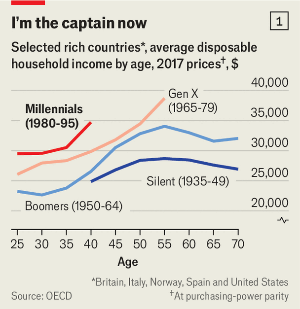
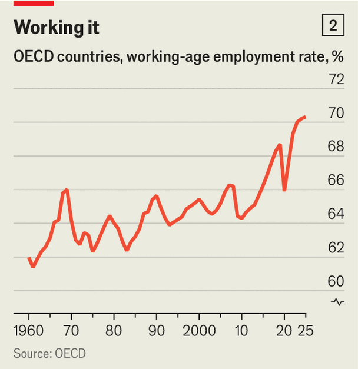
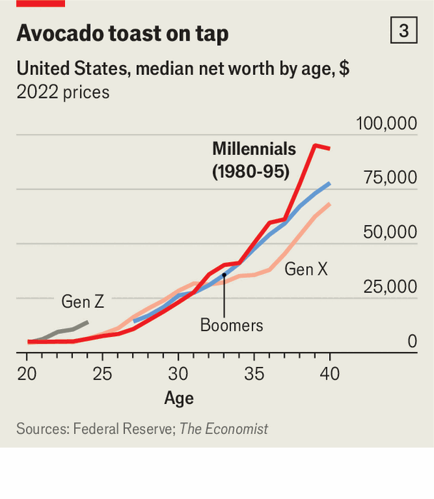

Don’t feel sorry for millennials. They are living it up now
It is easy to exaggerate their economic woes
Oct 15th 2026
SOME OF THE clichés about millennials are still true. In America that generation, now aged between their early 30s and mid-40s, may last year have spent around $1.5bn on avocados, according to The Economist’s rough estimate. Millennials also really do buy more craft beer than other cohorts. But, across rich countries, an even more enduring stereotype about millennials has stopped fitting the facts. They are no longer struggling as they once did. Many are out-earning their parents (see chart 1). Growing numbers occupy positions of real power in business, politics and culture. Home-ownership is rising fast.

This represents a sharp reversal from the 2010s, when millennials went through their 20s. During the worst of Greece’s economic crisis, youth unemployment was above 50%. Wages of Britons of that age were not really growing. About 40% of their German peers lived with their parents. Social movements, from UK Uncut and Spanish indignados to America’s Occupy Wall Street, which were spearheaded by millennials, hinted at the level of disenchantment with the status quo. So did widespread support for elderly left-wingers such as Jeremy Corbyn, Jean-Luc Mélenchon and Bernie Sanders.
Many millennials would still vote for these socialist old-timers. But it is increasingly not in their economic interest to do so. The Economist has assembled data on millennials’ incomes for 32 rich countries. In just three—Italy, Greece and Japan—are millennials worse off, in terms of inflation-adjusted income, than previous generations at the same age. At 30, Italian ones earned 10% less than Gen-Xers (born roughly between 1965 and 1979) at that age. Their Greek peers are still behind the young adults of the 2000s, before Greece suffered a crippling economic crisis starting in 2009. In Japan, the third exception, a 35-year-old’s household earnings in 2019 were below those of a 35-year-old in 1994, shortly after a giant bubble popped, deflating the economy for decades.
Yet these three outliers are just that. Millennials in the remaining 29 countries in our sample have higher real incomes than past generations. In some, including Australia, Britain and France, intergenerational progress has admittedly slowed. Whereas Gen-Xers did far better than their baby-boomer parents (born from 1946 to 1964), in those places millennials have gained only slightly on Gen X. But in many others, from rich America to fast-self-enriching Poland, the rate of improvement has stepped up.
As well as doing well on average, many millennials are reaching the top. An American millennial is just as likely to be a manager as a Gen-Xer was at the same age. America’s soaring tech industry has also enriched the millennial generation, where many of them now hold senior positions. They account for nearly a tenth of American billionaires, more than double Gen X’s share in 2011. Millennials are in charge of Anthropic, OpenAI and Meta, three artificial-intelligence powerhouses—and therefore in control of one of the most transforming technologies ever created.
Even in supposedly gerontocratic politics, millennials are doing just fine. They run the governments of Hungary, the Netherlands, Saudi Arabia and New York City—and, before long, probably Brazil (where a 45-year-old right-winger, just young enough to qualify as a millennial, is favoured to beat the 80-year-old left-wing incumbent in a presidential run-off on October 25th). They now make up 14% of America’s Congress, the same share as Gen X in 2011-13. The betting markets give a 50% or so chance to the next American president being a millennial (three possible front-runners, Alexandria Ocasio-Cortez, Jon Ossoff and J.D. Vance, are all between 31 and 45).

Rising millennial fortunes have two main causes: the economy and demography. The financial crisis of 2007-09 hit them especially hard. Young employees are last in, first out, so suffer most in a recession. And that one was especially deep and long. Today, though, the rich world’s labour market is about as strong as it has ever been (see chart 2). Some countries have recovered even more impressively. Although their incomes are lagging behind those of their elders, close to 80% of 35- to 44-year-old Greeks are in work, probably the highest share ever for that age group.
Demography is helping, too. After the financial crisis many baby-boomers decided to stay in work a few extra years to rebuild their pension pots. The number of senior roles for young people to fill fell. But then the covid-19 pandemic accelerated retirements: one study in America found 3m “excess retirees” by late 2022. There are not enough young workers to replace oldies who leave. In ten of the 38 members of the OECD club of mostly rich countries, working-age populations are falling. Millennials benefit from this relative labour scarcity.
What about housing, the moaning millennial’s biggest bugbear? At 30 about 40% of American millennials owned homes, well below Gen X at the same age. Yet among the oldest millennials, now in their 40s, property ownership matches Gen X exactly. Using data from the Institute for Fiscal Studies (IFS), a think-tank, we find that although British millennials at 30 were lagging behind previous generations’ owner-occupancy rate by 20 percentage points, by 40 they had halved the gap.
Older millennials have benefited as the economy has improved, allowing them to save more for a deposit. In recent years governments have relaxed mortgage requirements, making it easier for young people to get on the property ladder. Plenty of millennial graduates also needed time to pay down their student debt, which stopped many from saving for a down-payment. Others may have simply chosen to delay home-ownership. Our analysis of American official data suggests that the very richest young people today (earning over $200,000 a year) have far lower home-ownership rates than equivalently well-off youngsters from previous generations.

If money, presumably, is no object, what is? For one thing, millennials were in school for longer than past generations. They are also likely to get married later. For American men the median age at first marriage is 31, compared with 27 in the 1990s. This delays the point at which they need to buy a family home. (Evidence that, contrariwise, it is low home-ownership that leads people to delay marriage is at best mixed.) In part because home-ownership rates are now rising, millennials are building wealth faster than previous generations at the same age (see chart 3).
Critically, millennials are well placed for what comes next. To the extent that AI disrupts the labour market, young workers will once again bear the brunt. If anyone has a claim to feeling miserable, it may be Gen-Zers, born roughly from 1997 to 2012, whose job prospects could suffer as their millennial managers invest in labour-displacing technologies.
Millennials are also in for an inheritance windfall. We estimate that bequests are now equivalent to about 10% of GDP across the rich world every year. The IFS reckons that, in real terms, the median inheritance for people in England born in the 1980s will be around £136,000 ($180,000), compared with £66,000 for those born in the 1960s. Don’t pity millennials. It is their economy now. ■